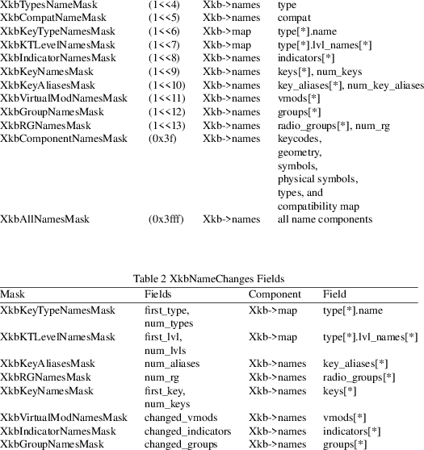
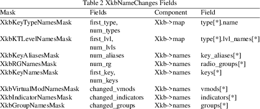

XkbChangeNames − Change symbolic names in the server
|
Bool XkbChangeNames |
(Display *dpy, unsigned int which, XkbDescPtr xkb); |
|
dpy |
connection to the X server |
|||
|
which |
mask of names or map components to be updated |
|||
|
xkb |
keyboard description to be updated |
XkbChangeNames provides a more flexible method for changing symbolic names than XkbSetNames and requires the use of an XkbNameChangesRec structure.
XkbChangeNames copies any names specified by changes from the keyboard description, xkb, to the X server specified by dpy. XkbChangeNames aborts and returns False if any illegal type names or type shift level names are specified by changes.
To change the symbolic names in the server, first modify a local copy of the keyboard description and then use either XkbSetNames, or, to save network traffic, use a XkbNameChangesRec structure and call XkbChangeNames to download the changes to the server. XkbSetNames and XkbChangeNames can generate BadAlloc, BadAtom, BadLength, BadMatch, and BadImplementation errors.
The XkbNameChangesRec allows applications to identify small modifications to the symbolic names and effectively reduces the amount of traffic sent to the server:
typedef struct
_XkbNameChanges {
unsigned int changed; /* name components that have changed
*/
unsigned char first_type; /* first key type with a new name
*/
unsigned char num_types; /* number of types with new names
*/
unsigned char first_lvl; /* first key type with new level
names */
unsigned char num_lvls; /* number of key types with new
level names */
unsigned char num_aliases; /* if key aliases changed, total
number of key aliases */
unsigned char num_rg; /* if radio groups changed, total
number of radio groups */
unsigned char first_key; /* first key with a new name */
unsigned char num_keys; /* number of keys with new names */
unsigned short changed_vmods; /* mask of virtual modifiers
for which names have changed */
unsigned long changed_indicators; /* mask of indicators for
which names were changed */
unsigned char changed_groups; /* mask of groups for which
names were changed */
} XkbNameChangesRec, *XkbNameChangesPtr
The changed field specifies the name components that have changed and is the bitwise inclusive OR of the valid names mask bits defined in Table 1. The rest of the fields in the structure specify the ranges that have changed for the various kinds of symbolic names, as shown in Table 2.
Xkb provides several functions that work with symbolic names. Each of these functions uses a mask to specify individual fields of the structures described above. These masks and their relationships to the fields in a keyboard description are shown in Table 1.


|
BadAlloc |
Unable to allocate storage |
|||
|
BadAtom |
A name is neither a valid Atom or None |
BadImplementation
Invalid reply from server
|
BadLength |
The length of a request is shorter or longer than that required to minimally contain the arguments | ||
|
BadMatch |
A compatible version of Xkb was not available in the server or an argument has correct type and range, but is otherwise invalid |
XkbSetNames(3)